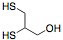

Grandma smelled geranium,
Started feeling kind of bum.
Sure you guessed the trouble, right—
Grandma whiffed some Lewisite.
From How to Tell the Gases, by Major Fairfax Downey
(United States Field Artillery Branch) [1]
Introduction
The thought of chemicals scares a lot of people in today’s society. Whether discussing household cleaners, metals found in soils and water, or chemical warfare, poisonous chemicals surround us in our every day lives. WWI displayed the first mass use of toxic gases as a weapon of battle, leading to the loss of many lives as seen in Table 1. These original toxic gases were synthesized using commercial products. For example, in 1917 mustard gas shells were introduced to the battlefield—leading to severe skin burns. [2] However, the signing of the Geneva Protocol after WWI detailed the permissible use of chemical weapons. The protocol stated that the only lawful use of chemical weapons for a country was in the case of retaliation. During WWII this agreement was upheld, yet it did not cease the production of these toxic gases. [2] Even though the number of chemical deaths associated with WWI was only 7.7% of the troops, this new concept of chemical warfare came as a shock to the world.
Table 1. Deaths Associated with Gas in WWI [3, p.36]
Country |
Numbers (tons) |
Deaths |
% Deaths |
Russia (unreliable) |
475,340 |
56,000 |
11.7 |
France |
190,000 |
8,000 |
4.2 |
Italy (unreliable) |
13,300 |
4,627 |
34.7 |
U.S. |
70,752 |
1,421 |
2.0 |
British Commonwealth |
180,983 |
6,062 |
3.3 |
Germany |
78,663 |
2,280 |
2.9 |
Totals |
1,009,038 |
78,390 |
7.7 |
Characteristics
Lewisite, the “dew of death”, methyl, or L are all used to refer to the extremely poisonous gas containing arsenic that could potentially be used in chemical warfare [1,4]. The name “dew of death” originated because the liquid chemical was planned to be released from airplanes in the night and would sprinkle to the ground causing a “dew” on the ground in the morning [1]. Lewisite was discovered in 1903 by a Catholic priest, Father Julius Aloysius Nieuwland, but was not introduced to the world; however, the molecule was rediscovered and characterized in 1918 for use as a chemical weapon [1].

Figure 1. Reaction Scheme to Produce Lewisite[1]
Lewisite is an arsenic trichloride compound, C2H2AsCl3, an oily, colorless liquid, insoluble in water and smells like geraniums. The potential effectiveness of Lewisite as a warfare agent is caused by the high boiling point, 374°F and the low freezing boiling point, 0.4°F; nevertheless it is difficult to work with due to it’s low solubility in water [4].

Figure 2. Lewisite Structure[A]

Figure 3. Identification Poster for Lewisite (1941-1945)[B]
Compared to mustard gas, Lewisite is significantly more toxic because of the arsenic. Lewisite can be introduced into the body through inhalation, skin/eye contact or ingestion. [4] Inhalation of Lewisite causes burning in the lungs at a concentration of approximately 8 mg-min/m3, yet it is not until a 20 mg-min/m3 concentration that the nose senses the smell. [5] The lethal dose (LCt50) is 1,500 mg-min/m3. Testing on dogs demonstrated the effects of Lewisite inhalation. The first symptoms are watery eyes, running nose, and vomiting. The conditions progress to extreme nasal congestion, intense coughing and usually death. If death is avoided, at this point more severe symptoms are observed, including violent sneezing and continuous drainage finally leading to death. However, if the animal was still alive on the 5th day, it usually recovered by the 10th day. [5]
If Lewisite comes in contact with the skin, blistering occurs within 26-48 hours. In low concentrations deep burns and skin cell death occurs; however in large concentrations (i.e 1/3 teaspoon for a 70 kilogram man) death can occur in 1 to 10 days. [5] The health problems associated with acute exposure to Lewisite are caused by the interactions with and inhibition of certain enzymes-- pyruvic oxidase, alcohol dehydrogenase, and hexokinase. It is believed that the Lewisite interacts with thiol (-SH) groups; however “the exact mechanism by which the Lewisite damages cells is not known.” [4].

Figure 4. Blistering Caused by Poisonous Gases [C]
Sadly, there is no test available for Lewisite exposure. The best available prediction is to test the arsenic concentration in urine. However, if exposure is known by the victim (i.e. the laboratory or during battle) there is one antidote, British Anti-Lewisite or Dimercaprol [4]. A key feature of 2,3 dimercaptopropanol in British Anti-Lewisite is a dithiol; it is this specific compound which has a greater affinity towards the arsenic than the enzymes otherwise affected, causing it to then be excreted. [1 pp. 78-81] Yet the treatment is not completely benign. Rashes form on skin, blood pressures increases, vomiting, eye tearing, and drainage occur. [1]

Figure 5. British Anti-Lewisite Compound: 2,3 dimercaptopropanol[D]
Lewisite in War
Lewisite’s main research development center was located on the campus of American University and the community of Spring Valley in Washington D.C. [6] It was here that the government founded the American University Experimental Station in 1918. The poisonous gas production at this site was the 2nd largest in the world and it is estimated that approximately 1000-1200 different potential chemical weapons were produced there. [6] Not only were deadly chemicals produced at this location, but tests were also conducted to determine the effectiveness of the gases. When the plant was shut down in 1920, the remaining poisonous chemicals had to be disposed of, yet the question that is still debated today is whether it was done properly. The regulations set by the army were that containers with poison had to be buried at least 3 to 3 ½ feet underground and could not be disposed of in water. [6] The issue of proper disposable of these poisons has surfaced multiple times. However, a true investigation on the issue was not completed until 1992 when a man paving broke a glass bottle and was rushed to the hospital because of eye pain and skin burns. After multiple similar events, the EPA reviewed soil samples and discovered that the soil concentration of 1,200 ppm for arsenic was 30 times greater than the emergency removal limit of 43 ppm. During the excavation, 600 items were discovered, “almost ½ of which were munitions and a small fraction of which still contained chemical agents. Some bombs were intact and still had fuses”. [6] This only one example of an area where history is beginning to come unraveled due to the contaminated from chemical warfare agents. There are as many as 9,184 Formerly Used Defense Sites known today. [6]

Figure 6. Women Working in Chemical Production Plants[E]
It is also important to note that the United States is not the only country facing this problem. Chemical gases such as Lewisite were not widely used in WWII. There are two exceptions, by Japan on a Chinese battlefield and the other by the Germans in concentration camps. Major stockpiles were created in case of retaliation. [1, p. xxi] Countries with stockpiles include Germany, Italy, England, France and the Soviet Union. The Soviet Union had the largest amount of Lewisite because of their lack of nuclear weapons and their plan to use it as their primary defense. Due to the large stockpiles, Russia has developed many problems with arsenic poisoning throughout the country. [1, p. xxii]
Table 2: Amount of Lewisite Produced by Countries [1, p. 119]
Country |
Tons of Lewisite |
U.S. |
20,150 |
Soviet Union |
22,700-47,000 |
Japan |
1,400 |
England, Iraq, North Korea, Italy |
2,000 |
One needs to remember for the future that the actions with chemicals today can affect generations to come. The production of Lewisite during the time of WWII, did not only affect the people in the past. It is affecting the generations of today, with multiple causes of arsenic poisoning.
References
(1) Vilensky, Joel A., Richard Butler, and Pandy R. Sinish. Dew of Death : The Story of Lewisite, America's World War I Weapon of Mass Destruction. New York: Indiana UP, 2005. vi+.
(3) Hammond, James W. Poison Gas : The Myths Versus Reality. New York: Greenwood Group, Incorporated, 1999. 36.
(4) Medical Management Guidelines for Blister Agents: Lewisite (L) (C2H2AsCl3) Mustard-Lewisite Mixture (HL). United States. Department of Health and Human Services. Agency for Toxic Substances & Disease Registry. 24 Sept. 2007. 17 Oct. 2008.
(5) Vilensky, Joel A., and Pandy R. Sinish. "Blisters as Weapons of War: The Vesicants of World War I." Summer 2006. Chemical Heritage Fondation. 17 Oct. 2008.
(6) McLamb, Marguerite E. "From Death Valley to Spring Valley." Sustainable Development Law & Policy III (2003): 3-6.
Image Credits
(A) Lewisite
(B) Lewisite Identification Poster
(C) Mustard Blistering
(D) Dimercaprol
(E) Women Working in Plants
{kind=link}
{kind=link}
Author: Evan Joslin
Disclaimer: This report was done for a case study in a class about Metals in Medicine on the effects of arsenic throughout the world; it is not being used as an act of terrorism. (EJ)
- Alzheimer's 1 2
- Antibiotics
- Antifouling Paint
- Arthritis
- Ayurvedic Medicine
- Breast Feeding
- Cancer Therapy
- Cattle Feed
- Cerebral Ischemia
- Chelation Therapy
- Chernobyl
- Chicken Feed
- Chocolate
- Cigarettes
- Coal 1 2
- Copper Mining
- Cremation
- Diabetes
- Electronic Waste
- Hat Making
- Hard Metal Disease
- Hybrid Cars
- Imaging 1 2 3 4
- Industrial Pollution
- Jewelry Allergy
- Lead Poisoning
- Lewisite
- Magnetic Particles
- Makeup
- Mountain Top Removal
- MRI Imaging
- Neurotoxicity
- Nuclear Power
- Nuclear Weapons
- Ouch Ouch Disease
- Peripheral Neuropathy
- PET Imaging
- Photodynamic Therapy
- Phytoremediation
- Pregnancy
- Radioactivity 1 2
- Seafood
- Sunscreens
- Tattoos
- Vaccines
- Wound Healing